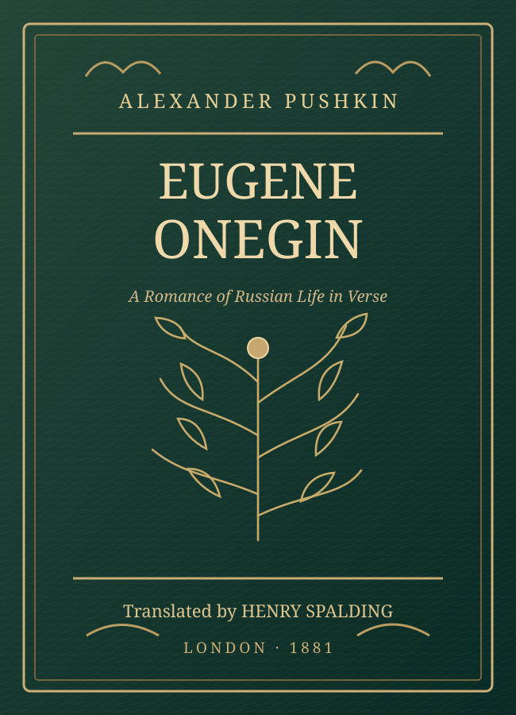

ОРИГИНАЛ · РОМАН В СТИХАХ · 1833
Евгений Онегин

Подлинный русский текст — только для чтения. Посвящение и все восемь глав романа доступны без автоматической озвучки. Английский перевод 1881 года Генри Сполдинга можно читать и слушать здесь. Иллюстрация обложки создана специально для библиотеки.